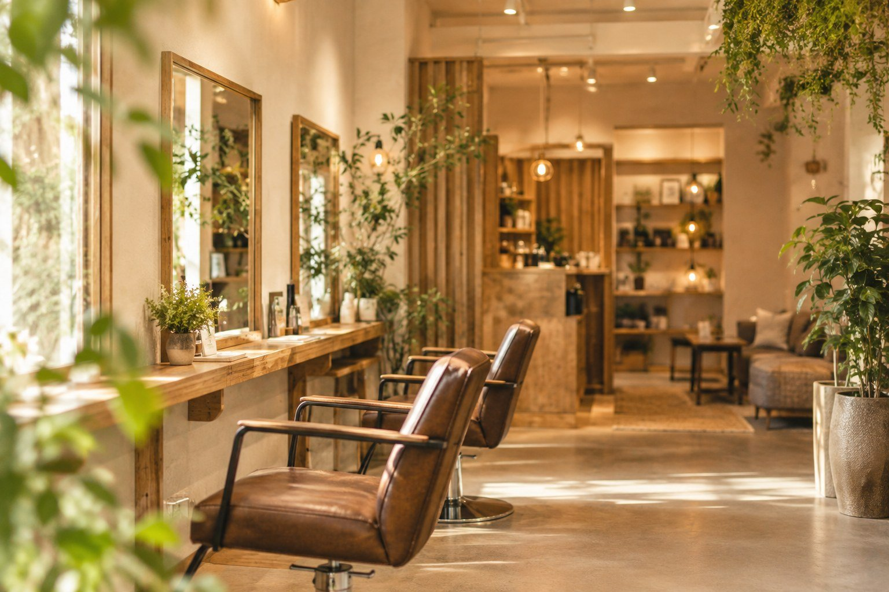

KARA PREMIUM GOLF & BAR
ゴルフ未経験者やおひとり様、少人数でも気軽に楽しめるゴルフバーを想定し、 「大人数向け」「高級すぎる」という印象にならないよう、 カジュアルに入りやすい雰囲気と店舗の魅力が伝わる構成に設計。
VIEW PROJECT→
WEB DESIGN / WEBSITE PRODUCTION
お店・企業のWebサイト制作
お店の魅力やこだわりを整理し、
「行ってみたい」「ここにお願いしたい」
と思ってもらえるWebサイトを制作します。
WORKS
ゴルフ未経験者やおひとり様、少人数でも気軽に楽しめるゴルフバーを想定し、 「大人数向け」「高級すぎる」という印象にならないよう、 カジュアルに入りやすい雰囲気と店舗の魅力が伝わる構成に設計。
VIEW PROJECT→美容室の集客を目的として制作したコンセプトサイト。 ターゲットは20〜40代を中心に、「髪がまとまらない」「くせ・うねりが気になる」 「髪が広がる」「髪のダメージが気になる」「縮毛矯正をしたいけど傷みが心配」 「髪質改善に興味がある」といった悩みを持つユーザーを想定。 「髪の悩み」を入口にして、来店につながる導線を意識して制作。
※Taki Hairは自主制作・コンセプト作品です。実案件ではありません。
VIEW PROJECT→こんなWebサイトを作ってみたい
LINEで相談する→SERVICE
WEB SITE
OPERATION
IMPROVEMENT
何をお願いしたらいいか分からない段階でも大丈夫です。
LINEで相談する→PROCESS
お店の特徴、ターゲット、強み、悩みなどをお聞きします。
目的やターゲットを整理し、ページ構成や予約・問い合わせまでの導線を考えます。
写真、文章、デザインを組み合わせて制作します。
実際に確認していただきながら、必要な修正を行います。
ドメイン・サーバー設定などを行い、実際のWebサイトとして公開します。
公開して終わりではなく、必要に応じて更新・分析・改善を行います。
GUNMA
TAKASAKI
ABOUT
はじめまして、瀧澤です。
Webサイトを通して、「ここに行ってみたい」「ここにお願いしたい」
と思ってもらえるきっかけを作りたいと考えています。
Webサイトは、そのお店をまだ知らない人にとっての最初の入口です。
だからこそ、ただ見た目をきれいにするだけではなく、
「このお店の魅力は何なのか」「誰に届けたいのか」「見た人に何をしてほしいのか」
を考えながら制作しています。
一つひとつのお店と向き合い、「お願いしてよかった」と思ってもらえる Webサイトを目指します。
PRICE
期間限定キャンペーン
オリジナルWebサイト制作一式（デザイン・コーディング・レスポンシブ対応・公開まで）が対象です。
LIGHT
¥20,000/ month〜
最低限のサイト維持・更新。
STANDARD
¥50,000/ month〜
サイト更新に加えて、SEO施策、アクセス分析、改善など。
CUSTOMER ACQUISITION
¥100,000/ month〜
サイト運用に加えて、集客につながる施策や改善を継続的に行うプラン。
どのプランが合うか分からない方も、お気軽にご相談ください。
料金について相談する→CONTACT
そんな段階でも大丈夫です。お店のことや現在のお悩みをお聞かせください。
目的や状況に合わせて、必要なWebサイトや運用方法を一緒に考えます。
LINE：相談・お問い合わせ / Instagram：制作実績や普段の活動